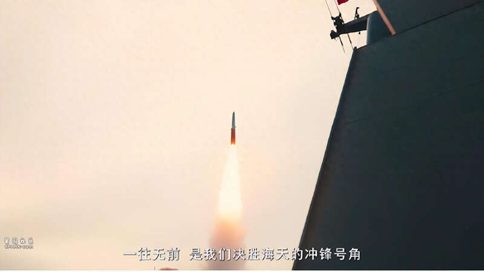
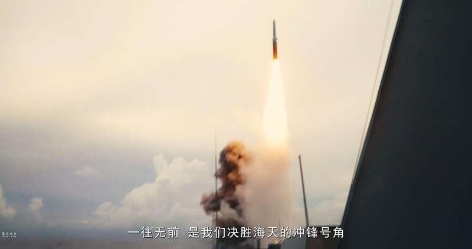
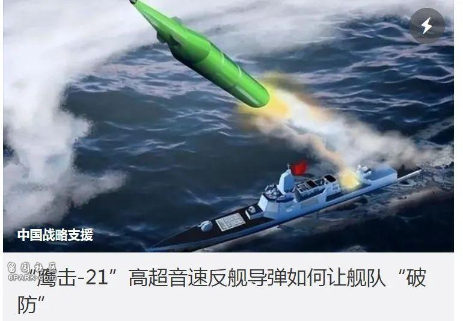
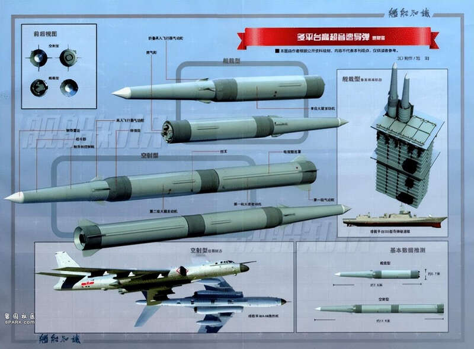

近日，中国海军055型驱逐舰发射鹰击-21高超音速反舰弹道导弹的视频再次被官方公开。这是继两年前首次公布相关视频后的第二次官方发布，引起了军迷们的广泛关注，配备鹰击-21导弹的055型驱逐舰被西方称为“全球火力最强战舰”。那么根据目前已知的资料，鹰击-21导弹有哪些技术特点？又将对现代海战产生哪些潜在的影响呢？

▲鹰击-21高超音速反舰弹道导弹从055大驱发射的画面
从视频中可以看出，鹰击-21采用了冷发射方式。导弹首先弹射升空，然后在空中点火，这种发射方式能够有效地保护发射装置和舰艇自身，减少对舰体的冲击。冷发射技术在现代导弹发射系统中越来越普遍，因为它提高了发射装置的安全性和可靠性。
鹰击-21导弹采用两级火箭发动机设计，后部是固体火箭发动机助推级，前部是高超音速滑翔体。导弹具备较大长径比的双锥体结构，并带有四片可折叠弹翼。该设计使得导弹在大气层边缘的临近空间可以近似滑翔飞行，射程达到1000公里以上，最大关机点速度可达10马赫。这样的高超音速性能，使得鹰击-21在末端突防阶段的速度达到4～6马赫，鹰击-21导弹的头体分离机动再入战斗部能够在进入目标区域时进行复杂的机动变轨和横向机动，极大地提高了突防能力和打击精度。这一特性使得鹰击-21能够有效规避敌方自动防空系统的拦截，现阶段任何反导武器系统均无法有效拦截

▲鹰击-21的弹体细节
鹰击-21是全球首款舰载反舰弹道导弹，其超远射程和高超音速性能使其对美军航母舰队构成了极大的威慑力。传统的反舰导弹通常依赖于低空突防，而鹰击-21则通过临近空间的高超音速滑翔，在更高的高度、更快的速度下进行打击，极大地增加了敌方防御系统的反应难度和拦截难度。
随着鹰击-21导弹的列装，中国海军在远程打击能力上取得了重大突破。鹰击-21不仅可以用于反舰作战，还可以针对陆地目标进行打击，从而赋予海军舰艇更加多样化的作战能力。这一能力的提升，使得中国海军在维护海上战略通道、保护国家海洋权益等方面具备更强的威慑力和行动能力。

▲去年中国战略支援部队官号发布的文章截图
鹰击-21导弹的使用得到了战略支援部队的态势感知装备的支援，这意味着中国军队在军兵种之间的协同作战能力得到了显著提升。通过共享天基和陆基的情报、监视和侦察数据，海军和火箭军可以实现更高效的协同打击，从而提升整体作战效能。
现代科技的发展使得未来海战的形式可能又开始向一战及以前时代的巨舰大炮主义略有回归。鹰击-21这样的高超音速反舰弹道导弹，具备远程打击和高效突防能力，使得舰艇在海战中再次成为决胜的关键。然而，这并不意味着航空母舰和舰载机的组合将迅速消亡。尽管舰射弹道导弹及高超音速武器在打击威力上占据优势，航空母舰及其舰载机仍旧是最有效的海域监视与控制工具。

▲多平台通用的新一代高超音速反舰弹道导弹
未来海战中，航空母舰及其舰载机可能会出现以下几种配置：其一，是配置远程侦察监视无人机，隐身超音速无人侦察机如无侦-8的舰载版，可以用于为舰射弹道导弹搜寻海面或地面目标。其隐身和高速飞行能力将增大敌方拦截难度，解决战场生存力问题。其二，是配置长时间巡航的重型攻击/运输机，类似美军C2“灰狗”运输机或V22“鱼鹰”的增强版，可以携带重型攻击弹药进行远程打击，扩大海战的攻击范围。这些新型舰载机将与舰射弹道导弹形成互补，提供全方位的作战支持。
鹰击-21高超音速反舰弹道导弹的再度曝光，展示了中国海军在现代海战中的强大打击能力和技术创新。作为全球首款舰载反舰弹道导弹，鹰击-21不仅提升了中国海军的远程打击能力，还对全球海军力量格局产生了深远影响。未来，随着更多高新技术的应用和各军兵种之间的协同作战能力的提升，中国海军将在维护国家安全和海洋权益方面发挥更加重要的作用。